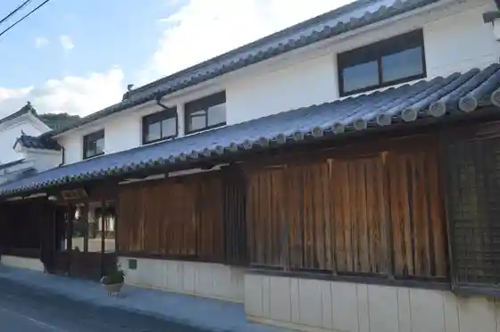
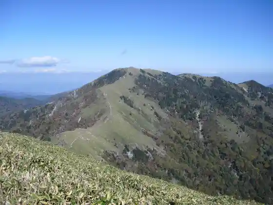
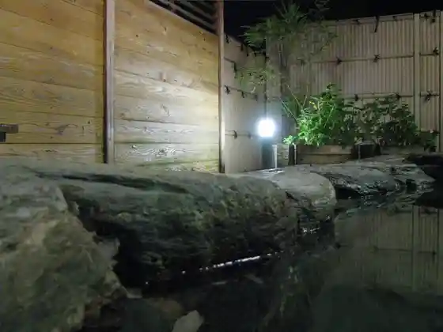
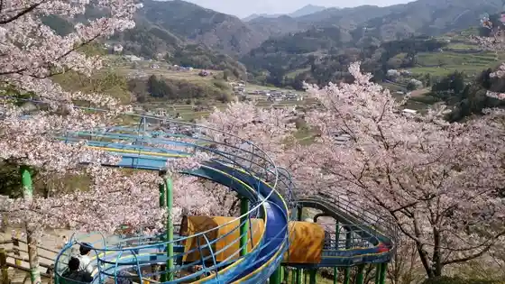

Niso Udatsu no Streetscape
Tsurugi, Tokushima · Official / source link
Orimoto Ya
Tsurugi, Tokushima · 0883-62-2009 · Official / source link

Kenzan
Tsurugi, Tokushima · Official / source link

Kenzan Momen Asa Onsen (Tsurugi Sanyumaonsen)
Tsurugi, Tokushima · 0883-62-5500 · Official / source link

O An Park
Tsurugi, Tokushima · Official / source link

Kyoju Village
Tsurugi, Tokushima · Official / source link
Sakura Zutsumi Irumineshon
Tsurugi, Tokushima · 0883-62-5000 · Official / source link
Roadside Station Sadamitsu Yuyu Kan
Tsurugi, Tokushima · Official / source link
Furuta Shokudo
Tsurugi, Tokushima · Official / source link
Jun Teuchi Chiudon no Bu
Tsurugi, Tokushima · Official / source link
Indora
Tsurugi, Tokushima · Official / source link
Men Tokoro Kaneka
Tsurugi, Tokushima · Official / source link
Omakase Kitchin
Tsurugi, Tokushima · Official / source link
O Konomi Yaki
Tsurugi, Tokushima · Official / source link
Zen Ta Ro
Tsurugi, Tokushima · Official / source link
Renge
Tsurugi, Tokushima · Official / source link
Awa Handa Te no Be
Tsurugi, Tokushima · Official / source link
Shiba Seimen
Tsurugi, Tokushima · Official / source link
Furumi Chaya
Tsurugi, Tokushima · Official / source link
Azumaya Seika Tsurugi Main Shop
Tsurugi, Tokushima · Official / source link
Kyu Nagai Ie Shoya Residence
Tsurugi, Tokushima · 0883-62-2018 · Official / source link
Hikichi Do
Tsurugi, Tokushima · Official / source link
Kenzan Ski Area
Tsurugi, Tokushima · Official / source link
Kira no Edohigan (Sakura)
Tsurugi, Tokushima · Official / source link
Sadamitsu Kawa (Momen Asakawa)
Tsurugi, Tokushima · Official / source link
Tsuchi Tsuchi Ro Falls (Dodoro no Taki)
Tsurugi, Tokushima · Official / source link
Narutaki
Tsurugi, Tokushima · Official / source link
Ichiu Kyo Dogama
Tsurugi, Tokushima · Official / source link
Fufu Ike
Tsurugi, Tokushima · Official / source link
Ra Fore Tsurugi Yama
Tsurugi, Tokushima · 0883-67-5555 · Official / source link
Orime Tei Yu Futokoro (Orimetei Yukai)
Tsurugi, Tokushima · 0883-68-9780 · Official / source link
Furumi Chaya (Komichaya)
Tsurugi, Tokushima · 080-8010-6254 · Official / source link
Hakko Ichiu
Tsurugi, Tokushima · 080-8010-6254 · Official / source link